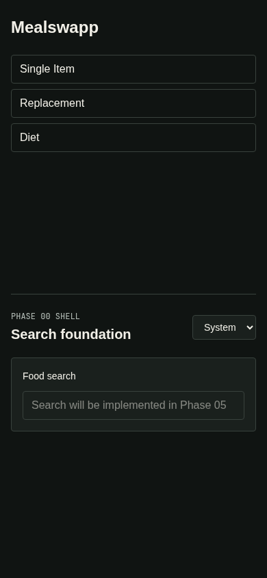

Quality Gate & Test Coverage
Generated automatically on 2026-06-01 22:43:19
QUALITY GATE PASSED
Go Internal Coverage
100.0%
Line coverage of internal modules
Frontend Coverage
100.00%
Line coverage (100.00% functions)
Verification Gates
- Traceability Validator: PASSED
- Local Stack Verifier: PASSED
- Frontend Screenshot Verifier: PASSED
- Requirements: PASSED (89/89)
Design Static Aspects
51.0%
50/98 static aspects implemented
Frontend Verification Screenshots
Desktop View (1280x900)

Mobile View (390x844)

Design Static Aspects Coverage
DESIGN-001
3/9
SearchViewSidebarComponentThemeProviderResultsGridAutocompleteDropdownOfflineBannerSettingsPanelLocalStorageManagerServiceWorker
DESIGN-002
EMPTY
SearchControllerAutocompleteRankerQueryParserPaginationHandlerFilterProcessorFunctionalityTagWeighter
DESIGN-003
EMPTY
CosineSimilarityCalculatorMacroVectorNormalizerThresholdFilterSimilarityIndicatorMapperSimilarityAssetResolver
DESIGN-004
1/7
JobQueueManagerLPSolverWrapperConstraintBuilderObjectiveFunctionDiversityPenalizerSolutionValidatorJobStatusTracker
DESIGN-005
COMPLETE
FoodItemEntityMealEntityRecipeEntityTagEntityMicronutrientVocabularyUnitConverterMacroNormalizerRepositoryInterfaces
DESIGN-006
2/6
AuthControllerOAuthHandlerPasswordHasherJWTManagerSessionManagerAccountLockoutTracker
DESIGN-007
4/5
StripeWebhookHandlerEntitlementManagerTrialTrackerUsageLimiterSubscriptionController
DESIGN-008
3/6
PreferenceManagerSavedDataRepositorySearchHistoryRepositoryProfileControllerDataExporterAccountDeleter
DESIGN-009
2/6
AdminControllerDataImporterItemCuratorTagManagerUserAdminPanelExternalSearchProxy
DESIGN-010
COMPLETE
RouteHandlerRateLimiterSecurityHeaderMiddlewareCSRFValidatorRequestValidatorCORSHandler
DESIGN-011
2/6
ServiceWorkerCacheRedisCacheLocalStorageCacheCacheInvalidatorLRUEvictionPolicyUserCachePurger
DESIGN-012
EMPTY
USDAClientOpenFoodFactsClientDataNormalizerRateLimitHandler
DESIGN-013
COMPLETE
EncryptionServiceInputSanitizerAuditLoggerTLSEnforcerRateLimiterCSRFValidator
DESIGN-014
COMPLETE
LogAggregatorMetricsCollectorAlertManagerUptimeMonitorFiberLogger
DESIGN-015
2/4
ConsentManagerDataRetentionPolicyDisclaimerRendererBackupManager
DESIGN-016
4/5
ThemeProviderColorPaletteTypographySystemComponentStylesLayoutGrid
DESIGN-017
2/4
GlobalExceptionHandlerErrorMessageMapperErrorBoundaryRetryManager
Go Function Coverage Details
| File | Function | Declaration Line | Status / Coverage |
|---|---|---|---|
| github.com/wiktor-jedski/mealswapp/backend/internal/app/app.go | New() |
10 | 100.0% |
| github.com/wiktor-jedski/mealswapp/backend/internal/cache/redis.go | Open() |
9 | 100.0% |
| github.com/wiktor-jedski/mealswapp/backend/internal/config/config.go | Load() |
42 | 100.0% |
| github.com/wiktor-jedski/mealswapp/backend/internal/config/config.go | splitCSV() |
94 | 100.0% |
| github.com/wiktor-jedski/mealswapp/backend/internal/config/config.go | env() |
106 | 100.0% |
| github.com/wiktor-jedski/mealswapp/backend/internal/config/config.go | requireURLScheme() |
116 | 100.0% |
| github.com/wiktor-jedski/mealswapp/backend/internal/database/postgres.go | Open() |
29 | 100.0% |
| github.com/wiktor-jedski/mealswapp/backend/internal/database/postgres.go | Ping() |
39 | 100.0% |
| github.com/wiktor-jedski/mealswapp/backend/internal/database/postgres.go | Close() |
45 | 100.0% |
| github.com/wiktor-jedski/mealswapp/backend/internal/database/postgres.go | Exec() |
51 | 100.0% |
| github.com/wiktor-jedski/mealswapp/backend/internal/database/postgres.go | Query() |
57 | 100.0% |
| github.com/wiktor-jedski/mealswapp/backend/internal/database/postgres.go | QueryRow() |
63 | 100.0% |
| github.com/wiktor-jedski/mealswapp/backend/internal/httpapi/router.go | Error() |
64 | 100.0% |
| github.com/wiktor-jedski/mealswapp/backend/internal/httpapi/router.go | NewRateLimiter() |
113 | 100.0% |
| github.com/wiktor-jedski/mealswapp/backend/internal/httpapi/router.go | Handler() |
119 | 100.0% |
| github.com/wiktor-jedski/mealswapp/backend/internal/httpapi/router.go | FailedLoginRule() |
141 | 100.0% |
| github.com/wiktor-jedski/mealswapp/backend/internal/httpapi/router.go | NewRouter() |
147 | 100.0% |
| github.com/wiktor-jedski/mealswapp/backend/internal/httpapi/router.go | registerV1Routes() |
175 | 100.0% |
| github.com/wiktor-jedski/mealswapp/backend/internal/httpapi/router.go | isMutation() |
200 | 100.0% |
| github.com/wiktor-jedski/mealswapp/backend/internal/httpapi/router.go | gatewayContext() |
206 | 100.0% |
| github.com/wiktor-jedski/mealswapp/backend/internal/httpapi/router.go | securityHeaders() |
223 | 100.0% |
| github.com/wiktor-jedski/mealswapp/backend/internal/httpapi/router.go | cors() |
239 | 100.0% |
| github.com/wiktor-jedski/mealswapp/backend/internal/httpapi/router.go | tlsEnforcer() |
260 | 100.0% |
| github.com/wiktor-jedski/mealswapp/backend/internal/httpapi/router.go | requireAuth() |
278 | 100.0% |
| github.com/wiktor-jedski/mealswapp/backend/internal/httpapi/router.go | csrfValidator() |
287 | 100.0% |
| github.com/wiktor-jedski/mealswapp/backend/internal/httpapi/router.go | GenerateCSRFToken() |
300 | 100.0% |
| github.com/wiktor-jedski/mealswapp/backend/internal/httpapi/router.go | validCSRFToken() |
312 | 100.0% |
| github.com/wiktor-jedski/mealswapp/backend/internal/httpapi/router.go | ValidateJSON() |
326 | 100.0% |
| github.com/wiktor-jedski/mealswapp/backend/internal/httpapi/router.go | ValidateQuery() |
341 | 100.0% |
| github.com/wiktor-jedski/mealswapp/backend/internal/httpapi/router.go | ValidatePath() |
354 | 100.0% |
| github.com/wiktor-jedski/mealswapp/backend/internal/httpapi/router.go | health() |
365 | 100.0% |
| github.com/wiktor-jedski/mealswapp/backend/internal/httpapi/router.go | ready() |
371 | 100.0% |
| github.com/wiktor-jedski/mealswapp/backend/internal/httpapi/router.go | instrument() |
396 | 100.0% |
| github.com/wiktor-jedski/mealswapp/backend/internal/httpapi/router.go | logLevel() |
426 | 100.0% |
| github.com/wiktor-jedski/mealswapp/backend/internal/httpapi/router.go | recordMetric() |
438 | 100.0% |
| github.com/wiktor-jedski/mealswapp/backend/internal/httpapi/router.go | writeError() |
446 | 100.0% |
| github.com/wiktor-jedski/mealswapp/backend/internal/httpapi/router.go | ClassifyServerError() |
454 | 100.0% |
| github.com/wiktor-jedski/mealswapp/backend/internal/httpapi/router.go | requestID() |
481 | 100.0% |
| github.com/wiktor-jedski/mealswapp/backend/internal/httpapi/router.go | routeTemplate() |
490 | 100.0% |
| github.com/wiktor-jedski/mealswapp/backend/internal/httpapi/router.go | rateLimitKey() |
496 | 100.0% |
| github.com/wiktor-jedski/mealswapp/backend/internal/httpapi/router.go | boolFloat() |
508 | 100.0% |
| github.com/wiktor-jedski/mealswapp/backend/internal/migrations/migrations.go | Run() |
22 | 100.0% |
| github.com/wiktor-jedski/mealswapp/backend/internal/observability/observability.go | Log() |
60 | 100.0% |
| github.com/wiktor-jedski/mealswapp/backend/internal/observability/observability.go | RecordMetric() |
66 | 100.0% |
| github.com/wiktor-jedski/mealswapp/backend/internal/observability/observability.go | Log() |
72 | 100.0% |
| github.com/wiktor-jedski/mealswapp/backend/internal/observability/observability.go | RecordMetric() |
81 | 100.0% |
| github.com/wiktor-jedski/mealswapp/backend/internal/observability/observability.go | DefaultAlertRules() |
101 | 100.0% |
| github.com/wiktor-jedski/mealswapp/backend/internal/repository/compliance_repository.go | NewPostgresComplianceRepository() |
76 | 100.0% |
| github.com/wiktor-jedski/mealswapp/backend/internal/repository/compliance_repository.go | RecordConsent() |
82 | 100.0% |
| github.com/wiktor-jedski/mealswapp/backend/internal/repository/compliance_repository.go | HasRequiredConsent() |
96 | 100.0% |
| github.com/wiktor-jedski/mealswapp/backend/internal/repository/compliance_repository.go | RequestDeletion() |
113 | 100.0% |
| github.com/wiktor-jedski/mealswapp/backend/internal/repository/compliance_repository.go | UpdateDeletionStatus() |
123 | 100.0% |
| github.com/wiktor-jedski/mealswapp/backend/internal/repository/compliance_repository.go | ListDeletionAudit() |
155 | 100.0% |
| github.com/wiktor-jedski/mealswapp/backend/internal/repository/compliance_repository.go | NewPostgresAdminImportAuditRepository() |
186 | 100.0% |
| github.com/wiktor-jedski/mealswapp/backend/internal/repository/compliance_repository.go | UpsertCuratedImport() |
192 | 100.0% |
| github.com/wiktor-jedski/mealswapp/backend/internal/repository/compliance_repository.go | FindCuratedImport() |
206 | 100.0% |
| github.com/wiktor-jedski/mealswapp/backend/internal/repository/compliance_repository.go | PersistAuditEntry() |
216 | 100.0% |
| github.com/wiktor-jedski/mealswapp/backend/internal/repository/compliance_repository.go | WithAudit() |
230 | 100.0% |
| github.com/wiktor-jedski/mealswapp/backend/internal/repository/compliance_repository.go | ListAuditForEntity() |
245 | 100.0% |
| github.com/wiktor-jedski/mealswapp/backend/internal/repository/compliance_repository.go | scanDeletionRequest() |
270 | 100.0% |
| github.com/wiktor-jedski/mealswapp/backend/internal/repository/compliance_repository.go | scanDeletionAuditEntry() |
280 | 100.0% |
| github.com/wiktor-jedski/mealswapp/backend/internal/repository/compliance_repository.go | scanCuratedImport() |
290 | 100.0% |
| github.com/wiktor-jedski/mealswapp/backend/internal/repository/compliance_repository.go | scanAdminAuditEntry() |
300 | 100.0% |
| github.com/wiktor-jedski/mealswapp/backend/internal/repository/compliance_repository.go | validateConsentRecord() |
310 | 100.0% |
| github.com/wiktor-jedski/mealswapp/backend/internal/repository/compliance_repository.go | validDeletionStatus() |
322 | 100.0% |
| github.com/wiktor-jedski/mealswapp/backend/internal/repository/compliance_repository.go | validDeletionTransition() |
328 | 100.0% |
| github.com/wiktor-jedski/mealswapp/backend/internal/repository/compliance_repository.go | validateCuratedImport() |
343 | 100.0% |
| github.com/wiktor-jedski/mealswapp/backend/internal/repository/compliance_repository.go | validateAdminAuditEntry() |
358 | 100.0% |
| github.com/wiktor-jedski/mealswapp/backend/internal/repository/compliance_repository.go | normalizedJSONPayload() |
376 | 100.0% |
| github.com/wiktor-jedski/mealswapp/backend/internal/repository/compliance_repository.go | nullableJSONPayload() |
385 | 100.0% |
| github.com/wiktor-jedski/mealswapp/backend/internal/repository/entitlement_repository.go | NewPostgresEntitlementRepository() |
54 | 100.0% |
| github.com/wiktor-jedski/mealswapp/backend/internal/repository/entitlement_repository.go | AppendEntitlement() |
60 | 100.0% |
| github.com/wiktor-jedski/mealswapp/backend/internal/repository/entitlement_repository.go | GetLatest() |
73 | 100.0% |
| github.com/wiktor-jedski/mealswapp/backend/internal/repository/entitlement_repository.go | RecordUsage() |
83 | 100.0% |
| github.com/wiktor-jedski/mealswapp/backend/internal/repository/entitlement_repository.go | GetUsageSince() |
99 | 100.0% |
| github.com/wiktor-jedski/mealswapp/backend/internal/repository/entitlement_repository.go | ListExpiredTrials() |
119 | 100.0% |
| github.com/wiktor-jedski/mealswapp/backend/internal/repository/entitlement_repository.go | InsertProcessedStripeEvent() |
145 | 100.0% |
| github.com/wiktor-jedski/mealswapp/backend/internal/repository/entitlement_repository.go | scanEntitlement() |
175 | 100.0% |
| github.com/wiktor-jedski/mealswapp/backend/internal/repository/entitlement_repository.go | scanUsageWindow() |
196 | 100.0% |
| github.com/wiktor-jedski/mealswapp/backend/internal/repository/entitlement_repository.go | validateEntitlement() |
206 | 100.0% |
| github.com/wiktor-jedski/mealswapp/backend/internal/repository/errors.go | Error() |
46 | 100.0% |
| github.com/wiktor-jedski/mealswapp/backend/internal/repository/errors.go | Unwrap() |
58 | 100.0% |
| github.com/wiktor-jedski/mealswapp/backend/internal/repository/errors.go | NewError() |
67 | 100.0% |
| github.com/wiktor-jedski/mealswapp/backend/internal/repository/errors.go | IsKind() |
73 | 100.0% |
| github.com/wiktor-jedski/mealswapp/backend/internal/repository/errors.go | validationError() |
80 | 100.0% |
| github.com/wiktor-jedski/mealswapp/backend/internal/repository/errors.go | unitConversionError() |
86 | 100.0% |
| github.com/wiktor-jedski/mealswapp/backend/internal/repository/food_repository.go | NewPostgresFoodItemRepository() |
69 | 100.0% |
| github.com/wiktor-jedski/mealswapp/backend/internal/repository/food_repository.go | GetByID() |
75 | 100.0% |
| github.com/wiktor-jedski/mealswapp/backend/internal/repository/food_repository.go | Search() |
89 | 100.0% |
| github.com/wiktor-jedski/mealswapp/backend/internal/repository/food_repository.go | Create() |
133 | 100.0% |
| github.com/wiktor-jedski/mealswapp/backend/internal/repository/food_repository.go | Update() |
153 | 100.0% |
| github.com/wiktor-jedski/mealswapp/backend/internal/repository/food_repository.go | Delete() |
177 | 100.0% |
| github.com/wiktor-jedski/mealswapp/backend/internal/repository/food_repository.go | validateFoodItem() |
190 | 100.0% |
| github.com/wiktor-jedski/mealswapp/backend/internal/repository/food_repository.go | validateFoodTags() |
217 | 100.0% |
| github.com/wiktor-jedski/mealswapp/backend/internal/repository/food_repository.go | validateMicronutrients() |
236 | 100.0% |
| github.com/wiktor-jedski/mealswapp/backend/internal/repository/food_repository.go | replaceFoodTags() |
247 | 100.0% |
| github.com/wiktor-jedski/mealswapp/backend/internal/repository/food_repository.go | getFoodByID() |
261 | 100.0% |
| github.com/wiktor-jedski/mealswapp/backend/internal/repository/food_repository.go | hydrateFoodTags() |
275 | 100.0% |
| github.com/wiktor-jedski/mealswapp/backend/internal/repository/food_repository.go | scanFoodItem() |
310 | 100.0% |
| github.com/wiktor-jedski/mealswapp/backend/internal/repository/food_repository.go | convertFoodItemForUnitSystem() |
362 | 100.0% |
| github.com/wiktor-jedski/mealswapp/backend/internal/repository/food_repository.go | validateFoodDensity() |
376 | 100.0% |
| github.com/wiktor-jedski/mealswapp/backend/internal/repository/food_repository.go | setFoodDensityFields() |
400 | 100.0% |
| github.com/wiktor-jedski/mealswapp/backend/internal/repository/food_repository.go | nullablePositiveFloat() |
420 | 100.0% |
| github.com/wiktor-jedski/mealswapp/backend/internal/repository/food_repository.go | nullableString() |
429 | 100.0% |
| github.com/wiktor-jedski/mealswapp/backend/internal/repository/food_repository.go | marshalMicros() |
438 | 100.0% |
| github.com/wiktor-jedski/mealswapp/backend/internal/repository/macros.go | NormalizeMacros() |
7 | 100.0% |
| github.com/wiktor-jedski/mealswapp/backend/internal/repository/macros.go | ValidatePhysicalState() |
26 | 100.0% |
| github.com/wiktor-jedski/mealswapp/backend/internal/repository/macros.go | ValidateMacros() |
37 | 100.0% |
| github.com/wiktor-jedski/mealswapp/backend/internal/repository/macros.go | ValidateMacrosPer100() |
49 | 100.0% |
| github.com/wiktor-jedski/mealswapp/backend/internal/repository/macros.go | ValidateMicronutrientKeys() |
64 | 100.0% |
| github.com/wiktor-jedski/mealswapp/backend/internal/repository/macros.go | ScaleMacros() |
81 | 100.0% |
| github.com/wiktor-jedski/mealswapp/backend/internal/repository/macros.go | invalidNumber() |
95 | 100.0% |
| github.com/wiktor-jedski/mealswapp/backend/internal/repository/macros.go | round4() |
101 | 100.0% |
| github.com/wiktor-jedski/mealswapp/backend/internal/repository/meal_repository.go | NewPostgresMealRepository() |
79 | 100.0% |
| github.com/wiktor-jedski/mealswapp/backend/internal/repository/meal_repository.go | GetByID() |
85 | 100.0% |
| github.com/wiktor-jedski/mealswapp/backend/internal/repository/meal_repository.go | Search() |
114 | 100.0% |
| github.com/wiktor-jedski/mealswapp/backend/internal/repository/meal_repository.go | CalculateMacros() |
159 | 100.0% |
| github.com/wiktor-jedski/mealswapp/backend/internal/repository/meal_repository.go | calculateMacros() |
165 | 100.0% |
| github.com/wiktor-jedski/mealswapp/backend/internal/repository/meal_repository.go | calculateCompositeMacros() |
183 | 100.0% |
| github.com/wiktor-jedski/mealswapp/backend/internal/repository/meal_repository.go | Create() |
213 | 100.0% |
| github.com/wiktor-jedski/mealswapp/backend/internal/repository/meal_repository.go | Update() |
235 | 100.0% |
| github.com/wiktor-jedski/mealswapp/backend/internal/repository/meal_repository.go | Delete() |
260 | 100.0% |
| github.com/wiktor-jedski/mealswapp/backend/internal/repository/meal_repository.go | validateMeal() |
273 | 100.0% |
| github.com/wiktor-jedski/mealswapp/backend/internal/repository/meal_repository.go | validateIngredients() |
306 | 100.0% |
| github.com/wiktor-jedski/mealswapp/backend/internal/repository/meal_repository.go | validateMealTags() |
332 | 100.0% |
| github.com/wiktor-jedski/mealswapp/backend/internal/repository/meal_repository.go | replaceIngredients() |
351 | 100.0% |
| github.com/wiktor-jedski/mealswapp/backend/internal/repository/meal_repository.go | replaceMealTags() |
365 | 100.0% |
| github.com/wiktor-jedski/mealswapp/backend/internal/repository/meal_repository.go | getMealByID() |
379 | 100.0% |
| github.com/wiktor-jedski/mealswapp/backend/internal/repository/meal_repository.go | loadIngredients() |
405 | 100.0% |
| github.com/wiktor-jedski/mealswapp/backend/internal/repository/meal_repository.go | hydrateMealTags() |
428 | 100.0% |
| github.com/wiktor-jedski/mealswapp/backend/internal/repository/meal_repository.go | ingredientBasisQuantity() |
451 | 100.0% |
| github.com/wiktor-jedski/mealswapp/backend/internal/repository/meal_repository.go | ingredientMassGrams() |
486 | 100.0% |
| github.com/wiktor-jedski/mealswapp/backend/internal/repository/meal_repository.go | convertMealForUnitSystem() |
498 | 100.0% |
| github.com/wiktor-jedski/mealswapp/backend/internal/repository/meal_repository.go | nullableMealMacro() |
512 | 100.0% |
| github.com/wiktor-jedski/mealswapp/backend/internal/repository/postgres.go | withTransaction() |
34 | 100.0% |
| github.com/wiktor-jedski/mealswapp/backend/internal/repository/postgres.go | mapPostgresError() |
51 | 100.0% |
| github.com/wiktor-jedski/mealswapp/backend/internal/repository/security_audit_repository.go | NewPostgresSecurityAuditRepository() |
25 | 100.0% |
| github.com/wiktor-jedski/mealswapp/backend/internal/repository/security_audit_repository.go | Audit() |
31 | 100.0% |
| github.com/wiktor-jedski/mealswapp/backend/internal/repository/tag_repository.go | NewPostgresTagRepository() |
43 | 100.0% |
| github.com/wiktor-jedski/mealswapp/backend/internal/repository/tag_repository.go | List() |
49 | 100.0% |
| github.com/wiktor-jedski/mealswapp/backend/internal/repository/tag_repository.go | Upsert() |
72 | 100.0% |
| github.com/wiktor-jedski/mealswapp/backend/internal/repository/tag_repository.go | IsInUse() |
92 | 100.0% |
| github.com/wiktor-jedski/mealswapp/backend/internal/repository/tag_repository.go | SoftDelete() |
100 | 100.0% |
| github.com/wiktor-jedski/mealswapp/backend/internal/repository/units.go | ConvertUnit() |
11 | 100.0% |
| github.com/wiktor-jedski/mealswapp/backend/internal/repository/units.go | ConvertServingToBase() |
38 | 100.0% |
| github.com/wiktor-jedski/mealswapp/backend/internal/repository/units.go | validUnit() |
59 | 100.0% |
| github.com/wiktor-jedski/mealswapp/backend/internal/repository/user_data_repository.go | NewPostgresUserProfileRepository() |
60 | 100.0% |
| github.com/wiktor-jedski/mealswapp/backend/internal/repository/user_data_repository.go | GetOrCreate() |
66 | 100.0% |
| github.com/wiktor-jedski/mealswapp/backend/internal/repository/user_data_repository.go | UpdateProfile() |
76 | 100.0% |
| github.com/wiktor-jedski/mealswapp/backend/internal/repository/user_data_repository.go | NewPostgresSavedDataRepository() |
112 | 100.0% |
| github.com/wiktor-jedski/mealswapp/backend/internal/repository/user_data_repository.go | SaveItem() |
118 | 100.0% |
| github.com/wiktor-jedski/mealswapp/backend/internal/repository/user_data_repository.go | RemoveItem() |
135 | 100.0% |
| github.com/wiktor-jedski/mealswapp/backend/internal/repository/user_data_repository.go | ListItems() |
151 | 100.0% |
| github.com/wiktor-jedski/mealswapp/backend/internal/repository/user_data_repository.go | AddHistory() |
180 | 100.0% |
| github.com/wiktor-jedski/mealswapp/backend/internal/repository/user_data_repository.go | ListHistory() |
200 | 100.0% |
| github.com/wiktor-jedski/mealswapp/backend/internal/repository/user_data_repository.go | validateSavedItemTarget() |
229 | 100.0% |
| github.com/wiktor-jedski/mealswapp/backend/internal/repository/user_data_repository.go | scanUserProfile() |
246 | 100.0% |
| github.com/wiktor-jedski/mealswapp/backend/internal/repository/user_data_repository.go | scanSavedItem() |
256 | 100.0% |
| github.com/wiktor-jedski/mealswapp/backend/internal/repository/user_data_repository.go | scanSearchHistoryEntry() |
266 | 100.0% |
| github.com/wiktor-jedski/mealswapp/backend/internal/repository/user_data_repository.go | validateSavedItemInput() |
276 | 100.0% |
| github.com/wiktor-jedski/mealswapp/backend/internal/repository/user_data_repository.go | validSavedItemKind() |
291 | 100.0% |
| github.com/wiktor-jedski/mealswapp/backend/internal/repository/user_data_repository.go | savedItemKindFilter() |
297 | 100.0% |
| github.com/wiktor-jedski/mealswapp/backend/internal/repository/vocabulary_repository.go | NewPostgresMicronutrientVocabularyRepository() |
31 | 100.0% |
| github.com/wiktor-jedski/mealswapp/backend/internal/repository/vocabulary_repository.go | ListActive() |
37 | 100.0% |
| github.com/wiktor-jedski/mealswapp/backend/internal/repository/vocabulary_repository.go | IsAllowed() |
60 | 100.0% |
| github.com/wiktor-jedski/mealswapp/backend/internal/repository/vocabulary_repository.go | Upsert() |
68 | 100.0% |
| github.com/wiktor-jedski/mealswapp/backend/internal/security/audit.go | AuditMutation() |
29 | 100.0% |
| github.com/wiktor-jedski/mealswapp/backend/internal/security/audit.go | AuditRead() |
38 | 100.0% |
| github.com/wiktor-jedski/mealswapp/backend/internal/security/encryption.go | NewEncryptionService() |
37 | 100.0% |
| github.com/wiktor-jedski/mealswapp/backend/internal/security/encryption.go | EncryptPII() |
43 | 100.0% |
| github.com/wiktor-jedski/mealswapp/backend/internal/security/encryption.go | DecryptPII() |
61 | 100.0% |
| github.com/wiktor-jedski/mealswapp/backend/internal/security/encryption.go | newGCM() |
78 | 100.0% |
| github.com/wiktor-jedski/mealswapp/backend/internal/security/sanitizer.go | SanitizeInput() |
19 | 100.0% |
| github.com/wiktor-jedski/mealswapp/backend/internal/seed/seed.go | Run() |
24 | 100.0% |
| github.com/wiktor-jedski/mealswapp/backend/internal/worker/worker.go | Run() |
13 | 100.0% |
| github.com/wiktor-jedski/mealswapp/backend/internal/worker/worker.go | runAfterPing() |
22 | 100.0% |
Frontend File Coverage Details
| File | Functions Coverage | Lines Coverage | Uncovered Line Numbers |
|---|---|---|---|
| src/lib/cache/service-worker.ts | 100.00% | 100.00% | - |
| src/lib/stores/theme.ts | 100.00% | 100.00% | - |